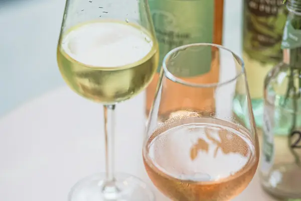

Grenache Rosé

Photo: micheile henderson on Unsplash
Grenache Rosé is a rosé style known for strawberry, melon, herbs. Its best-known homes are Provence, Spain.
Origin and history
Garnacha comes from Spain (likely Aragon) and spread to southern France and Sardinia, where it is called Cannonau.
Where it grows
Provence, Tavel and the southern Rhône, Navarra and Rioja (rosado), and Grenache-based rosés from Australia and California.
Structure
Light body, dry and fresh, with a pale salmon colour when pressed gently.
Aromas, young and aged
Strawberry, watermelon, red cherry, citrus peel and Provençal herbs.
Ageing
Drink young, within 1–2 years, for the freshest fruit.
Also known as
Garnacha (Spain), Cannonau (Sardinia).
Good to know
Provence rosé is usually a blend led by Grenache with Cinsault, Syrah and Mourvèdre, made by direct pressing or a short skin contact.
Grenache Rosé wines to try
Real bottles from The Wine Library.
Château d'Esclans Whispering Angel
Provence · Côtes de Provence · Grenache Rosé, Cinsault
Pale and dry: strawberry, peach and a crisp finish.
Food: Salads, grilled prawns
Gérard Bertrand Côte des Roses Rosé
Languedoc-Roussillon · Languedoc · Grenache Rosé, Cinsault, Syrah / Shiraz
Pale and fresh: redcurrant, citrus peel and a floral, gently saline finish.
Food: Grilled fish, salads, tapenade
Similar styles
Explore all grapes in the interactive guide
The Wine Reference newsletter
New wines, stories and career guides, one email a week at most.
Over 18s only. Unsubscribe any time with one click. Your email is stored securely by Kit and never shared.
Support The Wine Reference
This guide is free, with no paywall. If it helped you choose a bottle, you can buy me a glass and keep it growing.
🍷 Buy me a glass